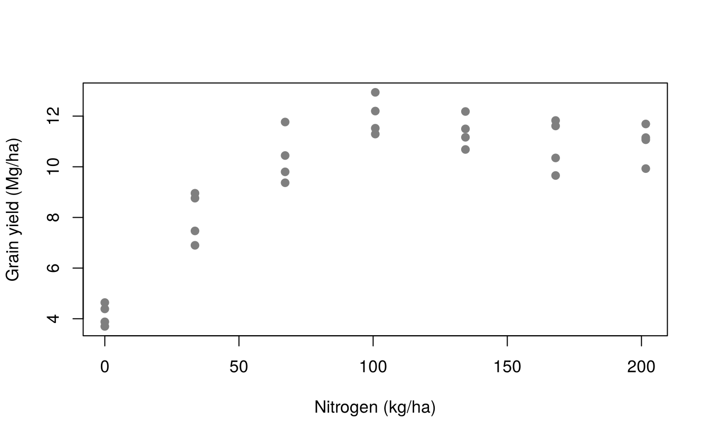
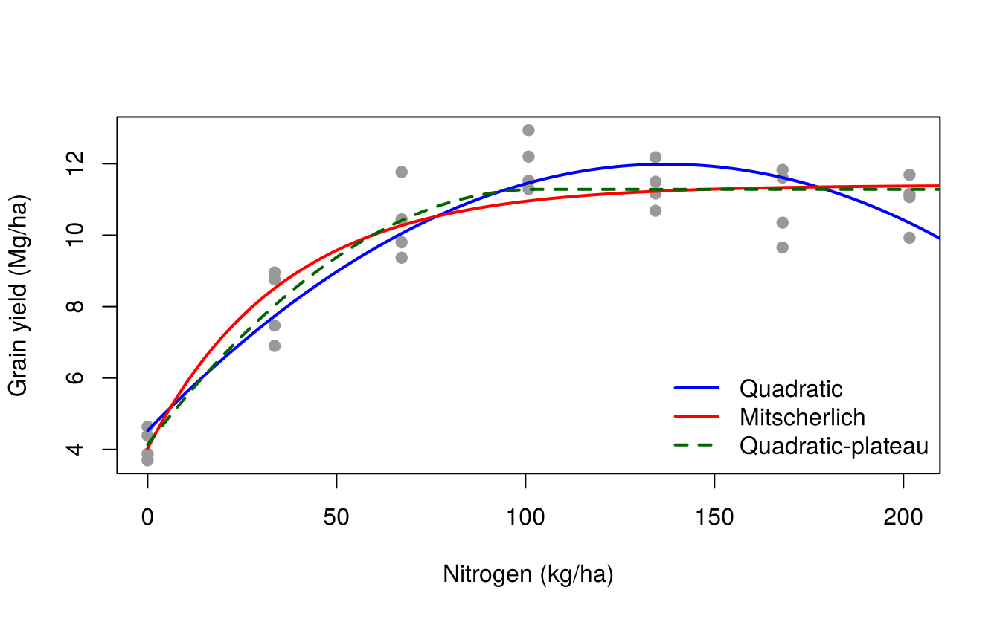
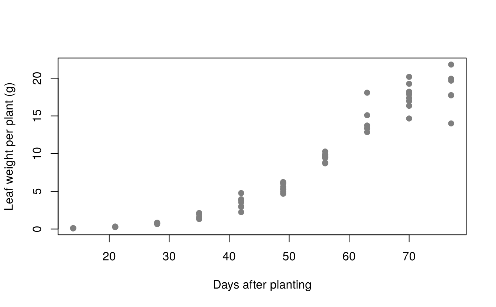
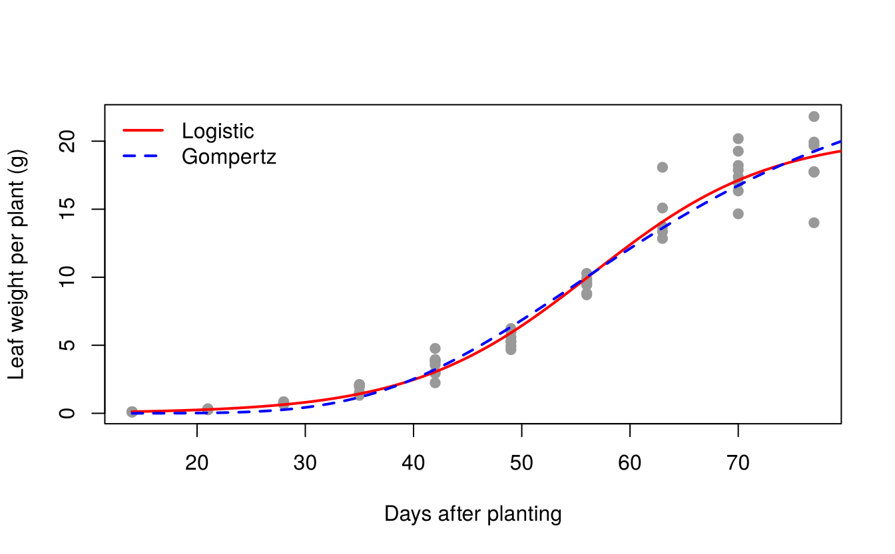
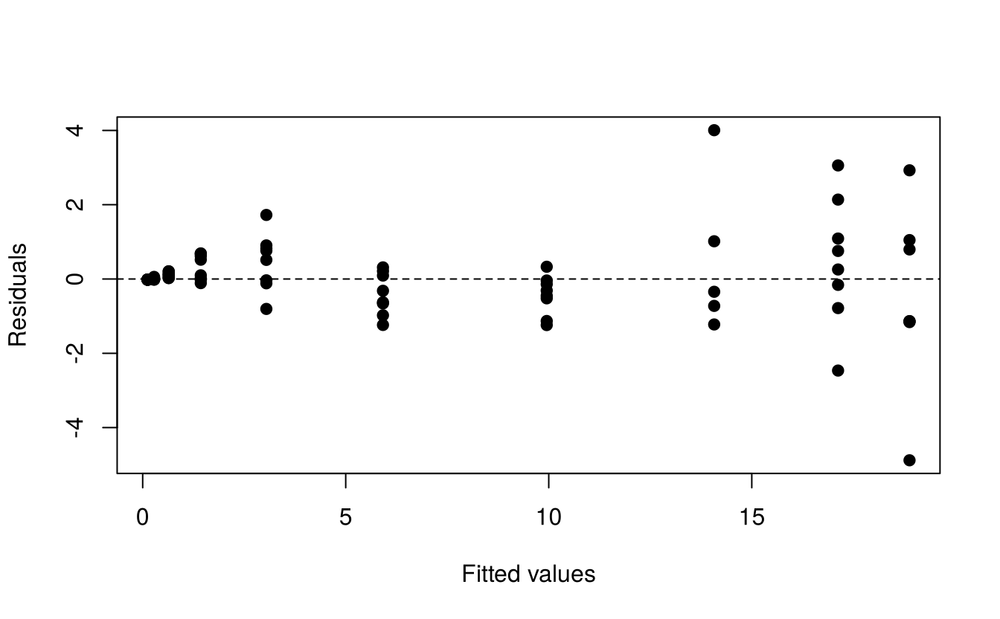

22 Fitting non-linear models
Many biological relationships are not straight lines. Crop yield rises with fertiliser and then levels off; plant biomass grows slowly, then rapidly, then approaches a ceiling; pest populations, enzyme reactions and drying curves all follow characteristic curves. This chapter shows how to fit such curves.
22.1 Linear and non-linear models
A model is linear if it is linear in its parameters, even if it is curved in \(x\). The quadratic
\[y = \beta_0 + \beta_1 x + \beta_2 x^2 + e\]
is a linear model and is fitted with lm() (Chapter 18). Some models become linear after a transformation, e.g. \(y = a x^b\) becomes \(\log y = \log a + b \log x\).
A model is non-linear if it cannot be written in linear form, for example the asymptotic (Mitscherlich) model
\[y = \alpha - (\alpha - \beta)\,e^{-\gamma x} + e\]
Non-linear models are fitted by non-linear least squares, which minimises the residual sum of squares iteratively, starting from initial guesses of the parameters. In R this is done with nls().
Non-linear models have important advantages: their parameters usually have a direct biological meaning (maximum yield, growth rate, time of maximum growth), and they behave sensibly outside the range of the data (an asymptote rather than a parabola turning down).
22.2 Common non-linear models in agriculture
| Model | Equation | Parameters | Typical use |
|---|---|---|---|
| Exponential growth | \(y = a\,e^{bx}\) | \(a\) initial value, \(b\) relative growth rate | early growth, population growth |
| Mitscherlich (monomolecular, asymptotic) | \(y = \alpha - (\alpha - \beta)e^{-\gamma x}\) | \(\alpha\) asymptote, \(\beta\) value at \(x = 0\), \(\gamma\) rate | fertiliser response |
| Logistic | \(y = \dfrac{\alpha}{1 + e^{(x_{mid} - x)/s}}\) | \(\alpha\) asymptote, \(x_{mid}\) inflection point, \(s\) scale | growth curves, disease progress |
| Gompertz | \(y = \alpha\,e^{-\beta e^{-\gamma x}}\) | \(\alpha\) asymptote | growth curves, asymmetric S-shape |
| Michaelis–Menten | \(y = \dfrac{V_m x}{K + x}\) | \(V_m\) maximum, \(K\) half-saturation constant | enzyme kinetics, nutrient uptake |
| Quadratic-plateau | quadratic up to \(x_0\), constant after | \(x_0\) critical level | fertiliser response |
22.3 Self-starting models
The most difficult part of fitting a non-linear model is choosing starting values. R provides self-starting models that compute good starting values automatically:
| Function | Model |
|---|---|
SSasymp(x, Asym, R0, lrc) |
asymptotic: \(\text{Asym} + (\text{R0} - \text{Asym})\,e^{-e^{\text{lrc}}x}\) |
SSlogis(x, Asym, xmid, scal) |
logistic |
SSgompertz(x, Asym, b2, b3) |
Gompertz: \(\text{Asym}\,e^{-b_2 b_3^x}\) |
SSmicmen(x, Vm, K) |
Michaelis–Menten |
SSfpl(x, A, B, xmid, scal) |
four-parameter logistic |
22.4 Example 1: response of maize to nitrogen
A trial at five sites in Minnesota, USA, in 2006 measured the grain yield (Mg/ha) of maize at seven nitrogen rates (0 to 201.6 kg N/ha) with four replications (hernandez.nitrogen in agridat). We analyse site S1.
library(agridat)
s1 <- subset(hernandez.nitrogen, site == "S1")
aggregate(yield ~ nitro, data = s1, FUN = mean)#> nitro yield
#> 1 0.0 4.151
#> 2 33.6 8.020
#> 3 67.2 10.345
#> 4 100.8 11.988
#> 5 134.4 11.381
#> 6 168.0 10.861
#> 7 201.6 10.959
plot(yield ~ nitro, data = s1, pch = 19, col = "grey50",
xlab = "Nitrogen (kg/ha)", ylab = "Grain yield (Mg/ha)")
Yield rises steeply up to about 100 kg N/ha and then levels off.
22.4.1 Quadratic model (linear in the parameters)
#> Estimate Std. Error t value Pr(>|t|)
#> (Intercept) 4.5271295 0.41055654 11.027 4.304e-11
#> nitro 0.1087394 0.00953841 11.400 2.139e-11
#> I(nitro^2) -0.0003963 0.00004546 -8.718 4.739e-09
b <- coef(quad)
N_max_quad <- -b[2] / (2 * b[3]) # dy/dN = 0
N_max_quad#> nitro
#> 137.2The fitted parabola reaches its maximum at 137 kg N/ha.
22.4.2 Mitscherlich (asymptotic) model
#>
#> Formula: yield ~ SSasymp(nitro, Asym, R0, lrc)
#>
#> Parameters:
#> Estimate Std. Error t value Pr(>|t|)
#> Asym 11.402 0.292 39.11 < 2e-16 ***
#> R0 4.029 0.460 8.75 0.0000000044 ***
#> lrc -3.580 0.182 -19.64 < 2e-16 ***
#> ---
#> Signif. codes: 0 '***' 0.001 '**' 0.01 '*' 0.05 '.' 0.1 ' ' 1
#>
#> Residual standard error: 0.928 on 25 degrees of freedom
#>
#> Number of iterations to convergence: 0
#> Achieved convergence tolerance: 0.00000407The estimated maximum attainable yield is 11.4 Mg/ha, the yield without nitrogen 4.03 Mg/ha, and the rate constant is \(\gamma = e^{\text{lrc}}\) = 0.0279 per kg N.
confint.default(mitsch) # Wald confidence intervals#> 2.5 % 97.5 %
#> Asym 10.830 11.973
#> R0 3.127 4.931
#> lrc -3.937 -3.22322.4.3 Quadratic-plateau model
The quadratic-plateau model assumes a quadratic response up to a critical nitrogen rate \(x_0 = -b/(2c)\) (the vertex of the parabola) and a constant yield beyond it. It is fitted with nls(), giving starting values taken from the quadratic fit:
qp <- nls(yield ~ ifelse(nitro < -b / (2 * c),
a + b * nitro + c * nitro^2,
a - b^2 / (4 * c)),
data = s1, start = list(a = 4, b = 0.1, c = -0.0004))
summary(qp)$coefficients#> Estimate Std. Error t value Pr(>|t|)
#> a 4.1389123 0.4094632 10.108 0.000000000258
#> b 0.1382913 0.0185798 7.443 0.000000085327
#> c -0.0006693 0.0001605 -4.169 0.000320414706
cf <- coef(qp)
c(critical_N = unname(-cf["b"] / (2 * cf["c"])),
plateau_yield = unname(cf["a"] - cf["b"]^2 / (4 * cf["c"])))#> critical_N plateau_yield
#> 103.31 11.28The yield plateau of about 11.3 Mg/ha is reached at about 103 kg N/ha.
22.4.4 Comparing the models
Models with different forms are compared with the Akaike information criterion (AIC; smaller is better) and the residual standard error:
data.frame(model = c("Quadratic", "Mitscherlich", "Quadratic-plateau"),
AIC = c(AIC(quad), AIC(mitsch), AIC(qp)),
RSE = c(sigma(quad), sigma(mitsch), sigma(qp)))#> model AIC RSE
#> 1 Quadratic 80.86 0.9407
#> 2 Mitscherlich 80.08 0.9277
#> 3 Quadratic-plateau 74.68 0.8424
nn <- data.frame(nitro = seq(0, 210, length.out = 200))
plot(yield ~ nitro, data = s1, pch = 19, col = "grey60",
xlab = "Nitrogen (kg/ha)", ylab = "Grain yield (Mg/ha)")
lines(nn$nitro, predict(quad, nn), col = "blue", lwd = 2)
lines(nn$nitro, predict(mitsch, nn), col = "red", lwd = 2)
lines(nn$nitro, predict(qp, nn), col = "darkgreen", lwd = 2, lty = 2)
legend("bottomright", c("Quadratic", "Mitscherlich", "Quadratic-plateau"),
col = c("blue", "red", "darkgreen"), lty = c(1, 1, 2), lwd = 2, bty = "n")
The quadratic-plateau model has the lowest AIC for these data. The three models agree closely within the range of the data but imply different optimum rates, which is why the choice of model matters for fertiliser recommendations.
22.4.5 Economic optimum dose
The economic optimum is the rate at which the extra yield from one more kilogram of nitrogen just pays for it, i.e. where the slope of the response curve equals the price ratio
\[\frac{dy}{dN} = \frac{\text{price of 1 kg N}}{\text{price of 1 unit of grain}}\]
For the quadratic model \(dy/dN = b_1 + 2b_2N\), so \(N_{\text{econ}} = (r - b_1)/(2b_2)\). Suppose 1 kg of N costs as much as 6 kg of grain, so \(r\) = 0.006 Mg grain per kg N:
r <- 0.006
N_econ_quad <- (r - b[2]) / (2 * b[3])
N_econ_quad#> nitro
#> 129.6
# For the Mitscherlich model, dy/dN = gamma * (Asym - R0) * exp(-gamma * N)
p <- coef(mitsch); gam <- exp(p["lrc"])
N_econ_mitsch <- log(gam * (p["Asym"] - p["R0"]) / r) / gam
unname(N_econ_mitsch)#> [1] 126.8The economic optimum is about 130 kg N/ha with the quadratic model and 127 kg N/ha with the Mitscherlich model, both below the 137 kg N/ha that maximises the quadratic yield. The Mitscherlich curve never reaches a maximum, so only an economic optimum can be defined for it.
22.5 Example 2: a logistic growth curve
The growth of soybean plants was followed by sampling plants every week and recording the average leaf weight per plant (g) (davidian.soybean in agridat). We fit a logistic curve to the 1988 data for the variety Forrest (F):
soy <- subset(davidian.soybean, year == 1988 & variety == "F")
plot(weight ~ day, data = soy, pch = 19, col = "grey50",
xlab = "Days after planting", ylab = "Leaf weight per plant (g)")
#>
#> Formula: weight ~ SSlogis(day, Asym, xmid, scal)
#>
#> Parameters:
#> Estimate Std. Error t value Pr(>|t|)
#> Asym 20.471 0.733 27.9 <2e-16 ***
#> xmid 56.462 0.922 61.2 <2e-16 ***
#> scal 8.291 0.584 14.2 <2e-16 ***
#> ---
#> Signif. codes: 0 '***' 0.001 '**' 0.01 '*' 0.05 '.' 0.1 ' ' 1
#>
#> Residual standard error: 1.14 on 73 degrees of freedom
#>
#> Number of iterations to convergence: 4
#> Achieved convergence tolerance: 0.00000636Interpretation of the parameters:
- Asym = 20.5 g: the final (asymptotic) leaf weight per plant;
- xmid = 56.5 days: the inflection point, when growth is fastest and the plant has reached half of its final weight;
- scal = 8.29 days: the time scale; the maximum absolute growth rate is \(\text{Asym}/(4 \times \text{scal})\) = 0.62 g per day.
A Gompertz curve, which is asymmetric about its inflection point, can be compared:
gomp <- nls(weight ~ SSgompertz(day, Asym, b2, b3), data = soy)
AIC(logis, gomp)#> df AIC
#> logis 4 240.3
#> gomp 4 254.1The logistic curve has the clearly lower AIC and fits these data better.
dd <- data.frame(day = seq(14, 84, length.out = 200))
plot(weight ~ day, data = soy, pch = 19, col = "grey60",
xlab = "Days after planting", ylab = "Leaf weight per plant (g)")
lines(dd$day, predict(logis, dd), col = "red", lwd = 2)
lines(dd$day, predict(gomp, dd), col = "blue", lwd = 2, lty = 2)
legend("topleft", c("Logistic", "Gompertz"), col = c("red", "blue"),
lty = c(1, 2), lwd = 2, bty = "n")
22.5.1 Checking the fit
As in linear regression, inspect the residuals:
plot(fitted(logis), residuals(logis), pch = 19,
xlab = "Fitted values", ylab = "Residuals")
abline(h = 0, lty = 2)
The spread of the residuals increases with the fitted value. In such cases a model on the log scale or weighted least squares (argument weights in nls()) may be more appropriate. Because measurements on the same plot over time are correlated, a full analysis of these data would use a non-linear mixed model (nlme::nlme()), with random effects for plots.
When nls() fails to converge: plot the data and check that the starting values are sensible; use a self-starting model if one exists; rescale variables with very large or very small values; or try algorithm = "port" with lower and upper bounds on the parameters.
Exercises
- Fit the Mitscherlich and quadratic-plateau models to site S5 of
hernandez.nitrogen. Compare the optimum nitrogen rates with those for site S1. - Fit a logistic curve to the 1988 data for the variety
Pindavidian.soybean. Do the two varieties differ in final leaf weight? - The built-in
Puromycindata give the reaction velocity of an enzyme at different substrate concentrations. Fit a Michaelis–Menten model withSSmicmen()to the treated cells. - The built-in
Loblollydata give the heights of loblolly pine trees by age. Fit an asymptotic model to tree301.